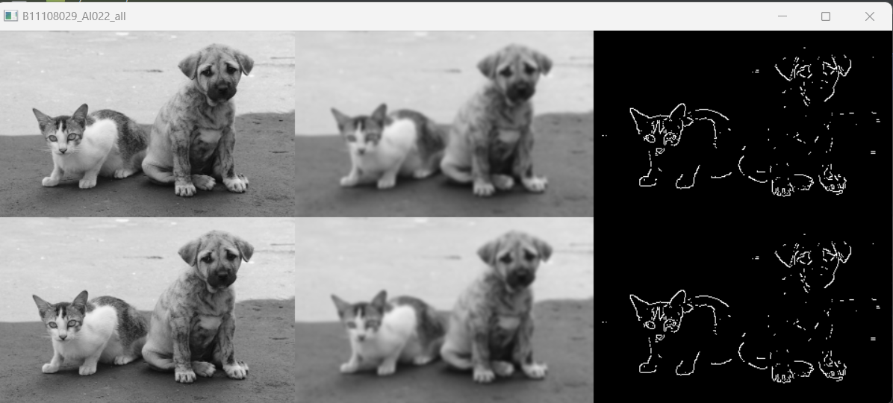

AI022
灰階模糊與邊緣檢測拼圖
展示圖像處理的常見步驟，並輸出一張組合圖，方便比較處理前後的效果。
功能簡介
此程式依序將圖像轉為灰階、做模糊處理（Gaussian Blur）與邊緣偵測（Canny），再用 NumPy 水平與垂直堆疊，輸出一張組合圖像。
成果展示

程式碼片段
AI022｜灰階模糊與邊緣檢測拼圖
# AI022_CV2.py
import cv2
import numpy as np
img = cv2.imread("../pic/cat_and_dog.jpg")
img = cv2.resize(img, (320, 200))
imgGray = cv2.cvtColor(img, cv2.COLOR_BGR2GRAY)
imgBlur = cv2.GaussianBlur(imgGray, (7, 7), 0)
imgCanny = cv2.Canny(img, 300, 300)
imghor = np.hstack((imgGray, imgBlur, imgCanny))
imgver = np.vstack((imghor, imghor))
cv2.imshow("A11408001_AI022_all", imgver)
cv2.waitKey(0)